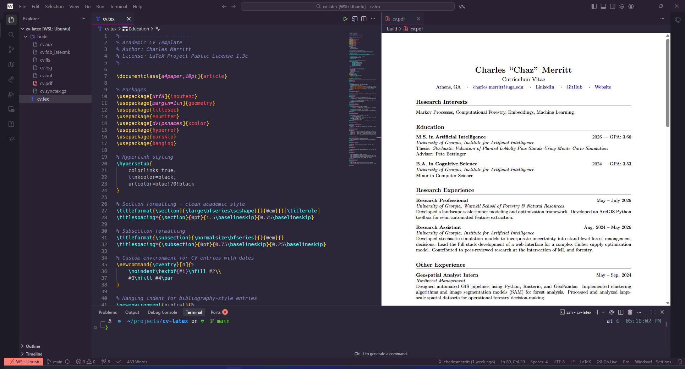

LaTeX Is Easier Than You Think: A Guide to the Modern Writing Stack
LaTeX is no longer a niche tool for programmers.
If you’re at all like me, you discover LaTeX (pronounced “lah-tek”) after one too many late nights fighting with Word or Google Docs.
I was hesitant to jump ship. LaTeX seemed complex, needlessly so. I was scared of the unknown.
However, if you find yourself struggling to find the Unicode character you need for a formula, dealing with strict formatting requirements for a scientific journal, thesis, or dissertation, or you just hate writing bibliographies, then you should seriously consider giving LaTeX a try.
I did, and it’s since become central to how I write anything. It’s not only great for technical writing, it’s useful to take your resume or CV to the next level as well.
And honestly, it’s way easier to use than I thought.
With LLM tools, the complexity barrier LaTeX was once known for is on its way out.
This article will serve as a non-technical guide to getting started with LaTeX. I’ll compare some popular LaTeX interfaces, such as Overleaf and OpenAI Prism. Then I’ll walk you through my personal local setup that has changed the way I approach technical writing.
If you’re short on time, I’ve highlighted the major differences between Overleaf, Prism, and a local setup in the table below.
![Comparison table of Overleaf, Prism, and a local IDE setup. Pricing: freemium; free; free, not including LLM use. Collaboration: real-time; real-time; limited to Git. Features: Overleaf has a familiar web UI, no external tools, limited compile time, and proprietary AI behind paywalls; Prism is AI-first with voice support and proprietary models, and is new and subject to change; the local setup integrates with your IDE, supports local tools, lets you bring your own LLM, and can be a pain to set up. Offline: Overleaf and Prism require a connection; the local setup works offline, though LLMs need a connection unless self-hosted. Best for: beginners with institutional access; anyone; power users.](images/latex-environment-comparison.png)
Overleaf
By far the most accessible gateway to LaTeX. Overleaf boasts great collaboration tools, their UI is the most similar to the standard word processors, and they even have some AI functionality built-in.
Especially useful is their library of templates; many scientific journals maintain submission templates on Overleaf.
While you can use Overleaf for free, a number of it’s features are gated behind a paywall. For instance, you are limited to one collaborator per project, and the free plan doesn’t support any integrations.
There is a student plan offering premium access for $98/year, which is still rather pricey. The standard plan runs at an eye-watering $198/year. To add insult to injury, to use their AI features will cost you an additional $12.50/month.
I personally started with Overleaf, only switching when I ran up against compile time limits on the free tier.
If you find yourself in a similar situation, instead of forking over your hard-earned cash for Overleaf premium, give one of these other solutions a try.
Prism
A newcomer to the scene, OpenAI released Prism on January 26, 2026. It benefits from an AI-first approach. OpenAI’s frontier reasoning models providing support well beyond simple formatting.
Prism has a number of stand-out features, real-time collaboration, deep AI integration, and my personal favorite, voice-mode.
Most surprising is that Prism is completely free, at least for now.
Right now, Prism is a no-brainer if you just want to write in LaTeX. There’s no setup, it has a robust set of features, and voice-mode is a unique offering and a blessing for tired hands everywhere.
The tradeoff is that there is no support for third-party tools. It’s a young service that might change in the future for better of for worse.
If you’re after something that’s timeless, and truly yours, allow me to introduce you to the most flexible setup of the bunch.
Local Setup (my personal favorite)
I spend a lot of time in my IDE. I use Windsurf, which is a fork of VS Code that offers built-in agentic engineering tools such as DeepWiki and Cascade.
Being built on top of VS Code means it also benefits from the vast library of open-source extensions. These extensions allow me to write LaTeX right there in my IDE. No switching back and forth, everything sits on my local filesystem, integration with third-party tools is trivial.
There are several advantages to this approach:
- It’s completely free, you can use VS Code and an open-source or self-hosted LLM.
- Centralized to my IDE, keeps my attention in one place.
- Infinitely customizable.
There are two major drawbacks to the local setup:
- Collaboration with non-technical colleagues is difficult.
- The initial setup can be a hurdle.
There are two answers to the first problem, which one makes more sense will depend on your persuasion.
If you’re technically inclined, you can simply use Git. If collaboration is really important for your work, but using Git to share your work with co-authors is out of the question, then that might be a situation where Prism or Overleaf makes more sense.
The initial setup is straightforward, and I’ll guide you through that now.
The Guide
Step 1: Install the extension
Start by simply installing the necessary extensions for your IDE, I’ll link the extensions for popular IDEs below.
VS Code/Windsurf/Cursor
Download LaTeX Workshop, you can also search for the extension from within your IDE by clicking on the extensions icon on the right side of your screen.
JetBrains IDEs
TeXify-IDEA is the plugin for you. The rest of the install should be similar to VS Code.
The LaTeX Workshop repo (link) also provides extensive documentation for setting up the LaTeX installation (link). If you need additional support, check there.
Step 2: Install LaTeX on your machine
How you do this part will depend on what operating system you use. The official TeX documentation provides instructions for Windows, Mac, and Unix.
I have a Windows machine, but I use WSL to do my development work in Linux. So I follow the Unix instructions using my WSL command line.
Note that this installation takes awhile. So set it up before you head out to lunch and leave it running in the background for awhile.
If you want to work in Windows, you can just use the installer and skip the rest. There’s also an installer for Mac which does the same. If you use a Unix system that’s not a Mac, then continue below to finish up your installation.
Step 3: Install TeX Live with wget (Unix only)
For ease, I’ll reproduce the instructions from the documentation here for Unix systems.
Non-interactive default installation on anything but Windows:
cd /tmp# working directory of your choiceDownload:
wget https://mirror.ctan.org/systems/texlive/tlnet/install-tl-unx.tar.gzor (my preferred method using curl):
curl -L -o install-tl-unx.tar.gz https://mirror.ctan.org/systems/texlive/tlnet/install-tl-unx.tar.gz
(or via whatever other method you like)zcat < install-tl-unx.tar.gz | tar xf -# note final
-on that command linecd install-tl-2*perl ./install-tl --no-interaction# as root or with writable destination
# may take several hours to run
Step 4: Add environment variable to PATH (Unix only)
For the Linux users, if using the standard bash terminal, you simply have to add the following line to your ~/.bashrc ~/.zshrc (or whatever shell you use) or ~/.profile files.
export PATH="/usr/local/texlive/2024/bin/x86_64-linux:$PATH"
The exact path might be slightly different for your system, check before running the command. In general the format will be
/usr/local/texlive/YYYY/bin/PLATFORM
And that’s it! This is the exact configuration I use to edit LaTeX documents directly in Windsurf (a vscode fork). If all goes well you should have an interface that looks something like this.

Using Windsurf (or any other IDE with AI integration) nets you huge benefits for working with LaTeX. Whereas Overleaf limits you to just 5 AI uses per day, you get practically unlimited AI usage using Cascade.
Given that LaTeX typesetting is much more akin to something like HTML, it’s really straightforward to debug and work with it using LLMs. Using a budget model like Deepseek V4 pro will let you save your tokens for more complex problem solving. You can even run local models completely for free by setting up Windsurf with Ollama.
Extra tip for workspace cleanliness
If you look back at the image of my interface, the astute observer might notice that all of my LaTeX build files go to their own folder instead of getting dumped right into my workspace root. This is because of a little bit of extra configuration I added into my settings.json.
You can copy my settings.json file for yourself by going to my Github repository just for that (link).
Wrapping up
In the future, I’ll share with you how I integrate my typesetting setup with Zotero and BibTeX for the ultimate references system, which is one of the many incredible advantages to using LaTeX. I haven’t written a single citation by hand since I’ve been using this system.
If you found this at all helpful, let me know so I can do more of this kind of thing.